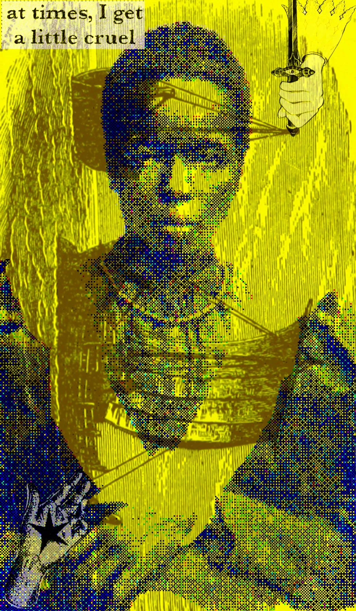

Template 01 / Archive
What does an archive remember?
Use this space to explain a real project: the question, the dataset, the analytical choices, and what the results did or did not show.
Replace with a real project · Method / findings / limits
A study in fragments, fields, and the spaces between. A living archive of images, words, and patterns.

IMG_1175 / SUBMISSION WORKThese works remain untitled. Each is addressed by the capture number the device gave it. The index is an address, not an interpretation. Open a plate to encounter the original colour.
Creative writing, essays, fragments, and notes. This is the quieter room: less interface, more attention to the rhythm of a thought.
A place for pieces that are finished, half-finished, or still changing shape.
Some things become smaller when named too quickly. An image can stay open a little longer; it can hold a contradiction without resolving it.
Editorial sample — replace this text with your own writing before launch.
A note on finding images in old books, and on the strange second life an image begins when it is detached from the page that once held it.
Editorial sample — replace this text with your own writing before launch.
The index gives each work an address. It does not tell the viewer what to see. That distinction leaves space for a meeting between the image and the person looking at it.
Editorial sample — replace this text with your own writing before launch.
Data analysis as a practice of attention: define a question, examine the material, make the method legible, and share what the evidence can actually support.
Use this space to explain a real project: the question, the dataset, the analytical choices, and what the results did or did not show.
A possible direction is to explore your own creative archive as data: timestamps, file sizes, sequences, and the gaps between periods of work.
Document an experiment with a reproducible workflow, a small visual result, links to code or notebooks, and a concise account of trade-offs.
Not a biography in miniature, but a note on why these different ways of working share a home.
I collect fragments, look for relationships, and make things from what I find.
This site brings together digital collage and drawing, creative writing, and data analysis. They are not presented as separate identities so much as different tools for noticing structure, ambiguity, and meaning.
The images are untitled and remain in capture sequence. Their reference numbers provide an address without prescribing an interpretation.
Source notes and image credits should be added alongside the relevant works. Much of the existing practice draws on public-domain historical scans, including material from the British Library's Mechanical Curator collection; individual source details should be verified and credited where available.
A public contact address will be added before launch.
Contact / collecting inquiries ↗